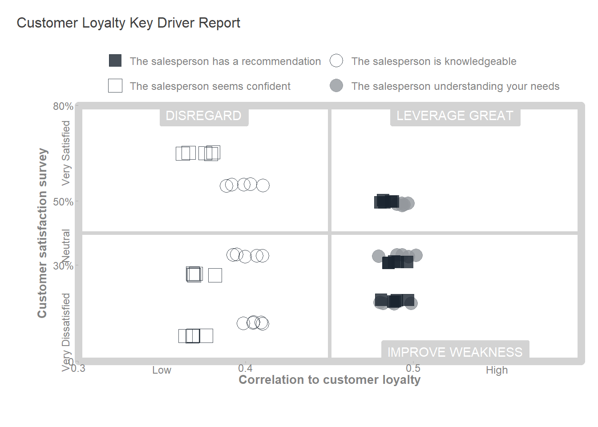

Code
library(tidyverse)
library(ggtext)
source("helper_functions.R")
source("theme_msd.R")
library(janitor)Cozmina Secula
January 15, 2024
In the competitive business landscape, every organization strives to cultivate a loyal customer base. This loyalty, often a result of trust and satisfaction with a company’s products and services, is a key driver of repeat business. Consequently, companies are increasingly focusing on identifying and enhancing the critical factors influencing customer loyalty and encouraging repeat investments.
This post will guide you on how to use key driver analysis to identify the essential factors that impact customer satisfaction and, consequently, customer loyalty.
A financial services organization intends to improve customer loyalty1, recognizing its importance in driving repeat investments. However, the organization currently lacks an understanding of the key drivers that significantly influence customer loyalty within the company.
What are the key factors influencing customer loyalty within the organization?
The financial services company carried out a survey. Customers who had interacted with a salesperson were asked to evaluate specific elements of their competence. They were also asked to express their likelihood of reinvesting in the company and to specify the potential amount of their reinvestment. The final question concerned the salesperson’s gender.
The survey included seven questions.
Four were specifically related to key salesperson competency elements:
The salesperson understanding your needs.
The salesperson seems confident.
The salesperson has a recommendation.
The salesperson is knowledgeable.
The customers were asked to grade the salesperson on a scale of 1 to 5, where 1 was ‘very dissatisfied’ and 5 was ‘very satisfied’.
Two question related to loyalty and asked customers to put themselves on a scale of 1 to 5 where:
5 Likelihood of reinvesting (Custloyalty):
Definitely going to go elsewhere with my investments.
Thinking about going elsewhere with my money.
Not sure about where I will place my future investments.
Thinking about investing here again.
Definitely will invest here again.
6 How much they may or may not reinvest (InvestMore):
Definitely will not invest more than now here.
Unlikely to invest more than now here.
Planning to invest 0–50 per cent more than now in this organization.
Planning to invest 50–100 per cent more in this organization.
Going to double my investment or more in this organization.
The final question was about the gender of the sales person.
7 Sex of sales person: 1 = female; 2 = male.
The data set includes responses from 2,507 customers and 8 variables.
Rows: 2,507
Columns: 8
$ Sat1 <dbl> 1, 2, 3, 3, NA, 3, 4, 1, 4, 3, 4, 3, 4, 5, 3, 3, 4, 4…
$ Sat2 <dbl> 1, 3, 5, 4, NA, 3, 4, 2, 5, 4, 4, 4, 4, 5, 4, 4, 4, 4…
$ Sat3 <dbl> 1, 3, 4, 4, NA, 3, 4, 1, NA, 3, 4, 3, 3, 4, 5, 3, 4, …
$ Sat4 <dbl> 3, 3, 5, 3, NA, 3, 5, 1, 5, 3, 4, 3, 4, 5, 4, 4, 4, 4…
$ CustSatMean <dbl> 1.50, 2.75, 4.25, 3.50, NA, 3.00, 4.25, 1.25, 4.67, 3…
$ Custloyalty <dbl> 4, 2, 2, 3, 5, 3, 4, 1, 3, 3, 4, 4, 4, 4, 1, 4, 4, 4,…
$ INvestMore <dbl> 3, 1, 3, 3, 3, 3, 2, 1, 3, NA, 2, 3, 3, 3, 3, 2, NA, …
$ SexOfSalesperson <dbl> 1, 1, 1, 1, 1, 1, 1, 2, 2, 2, 2, 2, 2, 2, 2, 2, 2, 2,…All variables in the data set are numeric.
For each variable, there are missing values (NAs).
| Name | cssurvey_raw |
| Number of rows | 2507 |
| Number of columns | 8 |
| _______________________ | |
| Column type frequency: | |
| numeric | 8 |
| ________________________ | |
| Group variables | None |
Variable type: numeric
| skim_variable | n_missing | complete_rate | mean | sd | p0 | p25 | p50 | p75 | p100 | hist |
|---|---|---|---|---|---|---|---|---|---|---|
| Sat1 | 128 | 0.95 | 3.47 | 1.04 | 1 | 3 | 4.00 | 4 | 5 | ▁▃▇▇▃ |
| Sat2 | 124 | 0.95 | 3.79 | 0.95 | 1 | 3 | 4.00 | 4 | 5 | ▁▁▅▇▅ |
| Sat3 | 142 | 0.94 | 3.43 | 1.10 | 1 | 3 | 4.00 | 4 | 5 | ▂▃▇▇▅ |
| Sat4 | 450 | 0.82 | 3.59 | 0.98 | 1 | 3 | 4.00 | 4 | 5 | ▁▂▆▇▃ |
| CustSatMean | 66 | 0.97 | 3.56 | 0.91 | 1 | 3 | 3.67 | 4 | 5 | ▁▂▆▇▆ |
| Custloyalty | 338 | 0.87 | 3.80 | 1.10 | 1 | 3 | 4.00 | 5 | 5 | ▁▂▃▇▇ |
| INvestMore | 476 | 0.81 | 2.93 | 0.82 | 1 | 3 | 3.00 | 3 | 5 | ▁▁▇▂▁ |
| SexOfSalesperson | 121 | 0.95 | 1.79 | 0.41 | 1 | 2 | 2.00 | 2 | 2 | ▂▁▁▁▇ |
| Variable | Detail | Unit | Range |
|---|---|---|---|
| Sat1 | The salesperson understanding your needs | numeric | 1-5 |
| Sat2 | The salesperson seems confident | numeric | 1-5 |
| Sat3 | The salesperson has a recommendation | numeric | 1-5 |
| Sat4 | The salesperson is knowledgeable | numeric | 1-5 |
| CustSatMean | Value derived from mathematical operation (mean) of customer responses |
numeric | 1-5 |
| Custloyalty | Likelihood of reinvesting | numeric | 1-5 |
| INvestMore | How much they may or may not reinvest | numeric | 1-5 |
| SexOfSalesperson | Gender | numeric | 1-2 |
| Variable | Problem | Solution |
|---|---|---|
| Sat1, Sat2, Sat3, Sat4 | variables’names are not meaningful | rename variables |
| CustSatMean, Custloyalty, INvestMore | inconsistent entries | rename variables |
| All except CustSatMean | variable type is not numeric; they are ordinal and binary | change variable type |
| All except CustSatMean | variable labels | assign labels |
CustSatMean, Custloyalty, INvestMore have inconsistent entries (e.g. IN..More).
# A tibble: 2,507 × 8
sat1 sat2 sat3 sat4 cust_sat_mean cust_loyalty invest_more
<dbl> <dbl> <dbl> <dbl> <dbl> <dbl> <dbl>
1 1 1 1 3 1.5 4 3
2 2 3 3 3 2.75 2 1
3 3 5 4 5 4.25 2 3
4 3 4 4 3 3.5 3 3
5 NA NA NA NA NA 5 3
6 3 3 3 3 3 3 3
7 4 4 4 5 4.25 4 2
8 1 2 1 1 1.25 1 1
9 4 5 NA 5 4.67 3 3
10 3 4 3 3 3.25 3 NA
# ℹ 2,497 more rows
# ℹ 1 more variable: sex_of_salesperson <dbl>The variable names ‘Sat1’, ‘Sat2’, ‘Sat3’, and ‘Sat4’ lack clarity. Although they are numeric in the data set, the data source classifies them as ordinal variables.
The variable ‘sex_of_salesperson’ could be more appropriately named as ‘gender’.
# Create new variables, assign labels, change variable type in factor
(cssurvey_clean <- cssurvey_clean |>
mutate(undst_cust_need = factor(sat1,
levels = c(1:5),
labels = c("Very Dissatisfied", "Dissatisfied", "Neutral", "Satisfied", "Very Satisfied")),
sales_confidence = factor(sat2,
levels = c(1:5),
labels = c("Very Dissatisfied", "Dissatisfied", "Neutral", "Satisfied", "Very Satisfied")),
give_recomm = factor(sat3,
levels = c(1:5),
labels = c("Very Dissatisfied", "Dissatisfied", "Neutral", "Satisfied", "Very Satisfied")),
product_know = factor(sat4,
levels = c(1:5),
labels = c("Very Dissatisfied", "Dissatisfied", "Neutral", "Satisfied", "Very Satisfied")),
gender = factor(sex_of_salesperson,
levels = c(1:2),
labels = c("female", "male"))))# A tibble: 2,507 × 13
sat1 sat2 sat3 sat4 cust_sat_mean cust_loyalty invest_more
<dbl> <dbl> <dbl> <dbl> <dbl> <dbl> <dbl>
1 1 1 1 3 1.5 4 3
2 2 3 3 3 2.75 2 1
3 3 5 4 5 4.25 2 3
4 3 4 4 3 3.5 3 3
5 NA NA NA NA NA 5 3
6 3 3 3 3 3 3 3
7 4 4 4 5 4.25 4 2
8 1 2 1 1 1.25 1 1
9 4 5 NA 5 4.67 3 3
10 3 4 3 3 3.25 3 NA
# ℹ 2,497 more rows
# ℹ 6 more variables: sex_of_salesperson <dbl>, undst_cust_need <fct>,
# sales_confidence <fct>, give_recomm <fct>, product_know <fct>, gender <fct>| Name | cssurvey_clean |
| Number of rows | 2507 |
| Number of columns | 13 |
| _______________________ | |
| Column type frequency: | |
| factor | 5 |
| numeric | 8 |
| ________________________ | |
| Group variables | None |
Variable type: factor
| skim_variable | n_missing | complete_rate | ordered | n_unique | top_counts |
|---|---|---|---|---|---|
| undst_cust_need | 128 | 0.95 | FALSE | 5 | Sat: 828, Neu: 747, Ver: 393, Dis: 315 |
| sales_confidence | 124 | 0.95 | FALSE | 5 | Sat: 1014, Neu: 620, Ver: 562, Dis: 125 |
| give_recomm | 142 | 0.94 | FALSE | 5 | Sat: 780, Neu: 717, Ver: 417, Dis: 313 |
| product_know | 450 | 0.82 | FALSE | 5 | Sat: 803, Neu: 648, Ver: 360, Dis: 183 |
| gender | 121 | 0.95 | FALSE | 2 | mal: 1884, fem: 502 |
Variable type: numeric
| skim_variable | n_missing | complete_rate | mean | sd | p0 | p25 | p50 | p75 | p100 | hist |
|---|---|---|---|---|---|---|---|---|---|---|
| sat1 | 128 | 0.95 | 3.47 | 1.04 | 1 | 3 | 4.00 | 4 | 5 | ▁▃▇▇▃ |
| sat2 | 124 | 0.95 | 3.79 | 0.95 | 1 | 3 | 4.00 | 4 | 5 | ▁▁▅▇▅ |
| sat3 | 142 | 0.94 | 3.43 | 1.10 | 1 | 3 | 4.00 | 4 | 5 | ▂▃▇▇▅ |
| sat4 | 450 | 0.82 | 3.59 | 0.98 | 1 | 3 | 4.00 | 4 | 5 | ▁▂▆▇▃ |
| cust_sat_mean | 66 | 0.97 | 3.56 | 0.91 | 1 | 3 | 3.67 | 4 | 5 | ▁▂▆▇▆ |
| cust_loyalty | 338 | 0.87 | 3.80 | 1.10 | 1 | 3 | 4.00 | 5 | 5 | ▁▂▃▇▇ |
| invest_more | 476 | 0.81 | 2.93 | 0.82 | 1 | 3 | 3.00 | 3 | 5 | ▁▁▇▂▁ |
| sex_of_salesperson | 121 | 0.95 | 1.79 | 0.41 | 1 | 2 | 2.00 | 2 | 2 | ▂▁▁▁▇ |
In order to achieve the objectives of the analysis, I will conduct a key driver analysis3. One of the goals of this analysis is to understand the factors influencing customer loyalty. I will start by reviewing the survey response percentages in the customer data.
Surveyed customers expressed satisfaction and high satisfaction with the ‘The salesperson seems confident’. However, they were less satisfied with ‘The salesperson understanding your needs’ and ‘The salesperson has a recommendation’.
The company might want to address these two aspects that customers are less satisfied with.
# Get the column names of the initial dataset
initial_order <- colnames(cssurvey_clean)[9:12]
# Calculate percentages for each category for each survey question
kda <- cssurvey_clean |>
drop_na()|>
pivot_longer(cols = 9:12, names_to = "question", values_to = "value" )|>
mutate(question= factor(question,
levels= initial_order))|>
count(question, value) |>
group_by(question)|>
mutate(prtc = round(n/sum(n) * 100),
prtc = ifelse(row_number() == n(), 100 - sum(prtc[-n()]), prtc)) |>
pivot_wider(id_cols = question, names_from = value, values_from = prtc)
kda$question <- c("The salesperson \nunderstanding your needs",
"The salesperson \nseems confident",
"The salesperson \nhas a recommendation",
"The salesperson \nis knowledgeable")
kda|>
kableExtra::kable(col.names = c("Question", "Very Dissatisfied", "Dissatisfied", "Neutral", "Satisfied", "Very Satisfied"),
align = "lccccc",
caption = "Customer Satisfaction with Salesperson Competencies (%)")| Question | Very Dissatisfied | Dissatisfied | Neutral | Satisfied | Very Satisfied |
|---|---|---|---|---|---|
| The salesperson understanding your needs | 4 | 14 | 33 | 35 | 14 |
| The salesperson seems confident | 2 | 6 | 27 | 43 | 22 |
| The salesperson has a recommendation | 5 | 14 | 31 | 33 | 17 |
| The salesperson is knowledgeable | 3 | 9 | 33 | 39 | 16 |
theme_set(theme_msd() + theme(
axis.title.y = element_blank(),
axis.ticks.y = element_blank(),
axis.text.y = element_text(color = GRAY3, size = 10),
panel.border = element_blank(),
axis.line = element_line(),
axis.title.x = element_text(hjust = 0.03, color = GRAY6, size = 10),
axis.text.x = element_text(size = 8),
plot.subtitle = element_markdown(hjust = 0.65),
axis.line.y = element_blank()
))
df <- kda |>
rename(Item = "question") |>
pivot_longer(cols = -Item, names_to = "Answer", values_to = "Value") |>
mutate(
Answer = factor(Answer, levels = c("Very Dissatisfied", "Dissatisfied", "Neutral", "Satisfied", "Very Satisfied")),
Value = as.numeric(Value) /100
)
df$Answer <- fct_rev(df$Answer)
color_scale <- c(
"Very Dissatisfied" = GRAY2,
"Dissatisfied" = GRAY2,
"Neutral" = GRAY9,
"Satisfied" = GRAY5,
"Very Satisfied" = GRAY5)
formatted_subtitle <- paste0(
"<span style='color:", color_scale[1], "'>**", names(color_scale)[1], "**</span>",
" | ",
"<span style='color:", color_scale[2], "'>**", names(color_scale)[2], "**</span>",
" | ",
"<span style='color:", color_scale[3], "'>**", names(color_scale)[3], "**</span>",
" | ",
"<span style='color:", color_scale[4], "'>**", names(color_scale)[4], "**</span>",
" | ",
"<span style='color:", color_scale[5], "'>**", names(color_scale)[5], "**</span>"
)
pt <- df |>
ggplot(aes(y = Item, x = Value, fill = Answer)) +
geom_bar(stat = "Identity", width = 0.65, color = "white") +
scale_fill_manual(values = color_scale, guide = "none") +
labs(
title = "Customer Satisfaction with Salesperson Competencies \n",
subtitle = formatted_subtitle,
x = "\nPercent of total"
) +
scale_x_continuous(position = "top",
breaks = seq(0,1,by = 0.2),
labels = scales::percent_format(accuracy = 1)) +
lemon::coord_capped_cart(top = "both")
pt |>
save_and_show_plot(width = 6, height = 4, "FIG01.png")Another approach to analyzing the customer survey data is through correlation. Correlation is a statistical measure of the relationship between two variables, how they are interconnected.
Among the four questions on the survey, at this stage, I aim to identify which ones have the strongest correlation with the question related to customer loyalty: the likelihood of reinvestment.
# Correlation for several pairs of variables
cor_cust_loyalty <- cssurvey_clean |>
select(sat1, sat2, sat3, sat4, cust_loyalty)|>
cor(method = "spearman",
use = "pairwise.complete.obs")|>
round(digits = 2)
survey_quest = c("The salesperson understanding your needs",
"The salesperson seems confident",
"The salesperson has a recommendation",
"The salesperson is knowledgeable")
cor_to_cust_loyalty = c(0.49, 0.37, 0.49, 0.40)
(cor_matrix <- tibble(survey_quest, cor_to_cust_loyalty)|>
arrange(desc(cor_to_cust_loyalty))|>
kableExtra::kable(col.names = c("Survey Question", "Correlation to \nCustomer Loyalty"),
align = "lr",
caption = "Correlation of survey questions to customer loyalty"))| Survey Question | Correlation to Customer Loyalty |
|---|---|
| The salesperson understanding your needs | 0.49 |
| The salesperson has a recommendation | 0.49 |
| The salesperson is knowledgeable | 0.40 |
| The salesperson seems confident | 0.37 |
‘The salesperson understanding your needs’ , ‘The salesperson has a recommendation’ , and ‘The salesperson is knowledgeable’ are the most highly correlated to the question related to loyalty (0.49, respectively 0.40). The company might see these areas to focus in its efforts to improve customer loyalty.
In this step, I will integrate the customer satisfaction questions and their correlation to customer loyalty into a unified view for enhanced insights. To calculate the customer’s importance of loyalty, I calculated the percentage of dissatisfied and very dissatisfied customers in a single metric, percent dissatisfaction. The ‘Customer Loyalty Importance’ is a calculated metric that combines percent dissatisfaction and the correlation to customer loyalty in one measure (see the table below). It allows us to rank survey questions by importance.
# we need to consolidate data from "kda" data set and "cor_matrix" data set
# define cor_matrix as data frame
cor_matrix <- as.data.frame(cor_matrix)
cor_matrix <- tibble(survey_quest, cor_to_cust_loyalty)
kda_cor <- bind_cols(kda, cor_matrix)
kda_cor <- kda_cor |>
mutate(percent_dissatisfied = Dissatisfied + `Very Dissatisfied`,
percent_satisfied = Satisfied + `Very Satisfied`,
percent_neutral = Neutral) |>
group_by(percent_dissatisfied, cor_to_cust_loyalty) |>
mutate(cust_loyalty_importance = percent_dissatisfied*cor_to_cust_loyalty)|>
ungroup()
kda_consolidate <- kda_cor |>
select(question, percent_dissatisfied, cor_to_cust_loyalty, cust_loyalty_importance)|>
arrange(desc(cust_loyalty_importance))|>
kableExtra::kable(col.names = c("Survey Question", "Percent Dissatisfaction", "Correlation to \nCustomer Loyalty", "Customer Loyalty \nImportance"),
align = "lrrr",
caption = "Customer Satisfaction items ranked by importance")
kda_consolidate| Survey Question | Percent Dissatisfaction | Correlation to Customer Loyalty | Customer Loyalty Importance |
|---|---|---|---|
| The salesperson has a recommendation | 19 | 0.49 | 9.31 |
| The salesperson understanding your needs | 18 | 0.49 | 8.82 |
| The salesperson is knowledgeable | 12 | 0.40 | 4.80 |
| The salesperson seems confident | 8 | 0.37 | 2.96 |
What is the data from the table telling us?
theme_set(theme_msd() + theme(
axis.title.y = element_blank(),
axis.ticks.y = element_blank(),
axis.text.y = element_text(color = GRAY3, size = 10),
panel.border = element_blank(),
axis.line = element_line(),
axis.title.x = element_text(hjust = 0.03, color = GRAY6, size = 9),
axis.text.x = element_text(color = GRAY3, size = 10),
plot.subtitle = element_markdown(hjust = 0),
axis.line.y = element_blank()
))
kda_consolidate_plot <- kda_cor |>
mutate(question = fct_reorder(question, cust_loyalty_importance))|>
ggplot(aes(x = cust_loyalty_importance, y = question))+
geom_bar(stat = "identity", width = 0.6, color = GRAY2)+
geom_text(aes(label = cust_loyalty_importance), hjust = -0.15, size = 3.5)+
labs(
title = "The sales person having a recommendation and understanding customers \nneeds are the issues that require some improvments \n",
subtitle = "",
x = "Customer Loyalty Importance"
)
kda_consolidate_plot |>
save_and_show_plot(width = 6.5, height = 4, "FIG02.png")The findings of the key driver analysis are presented below in a key driver quadrant. It allows us to see the two intersecting information points: the correlation of the four survey questions to customer loyalty, our chosen indicator to understand (axis x), and the satisfaction of customers’ responses (axis y).
The survey questions are divided into three categories:
Improve Weakness: The high correlation to customer loyalty (0.49) and the low percentages of customer satisfaction (dissatisfied and very dissatisfied) put the questions “the salesperson has a recommendation” (19) and “the salesperson understanding your needs” (18) in the lower right quadrant of the key driver analysis chart. On the upper side of this quadrant, it is important to note the significant percentage of neutral responses for these two questions.
Leverage Great: The high correlation to customer loyalty (0.49) and the high percentages of customer satisfaction (satisfied and very satisfied) put the questions “the salesperson has a recommendation” (50) and “the salesperson understands your needs” (49) in the upper right quadrant of the key driver analysis chart.
Disregard: In the rest of the survey questions, there is a range of satisfied and dissatisfied customer responses, but these questions are not as important concerning customer loyalty as the other two questions are. Therefore, these are not considered aspects the organization should focus on investing in to improve customer loyalty.
Key driver analysis explores a wide range of measures to uncover what is most important in influencing the chosen objective. Key driver analysis helps you understand where to focus your energy and resources to obtain the results you are looking for.
library(glue)
library(grid)
# Data ----
# |- KDA Quadrant ----
# First, I organize columns and rows in the data frame to make easier
# to work with. I made a column "sum_satisfaction" with 3 categories where
# I summed up the percentage of categories satisfied and very satisfied, dissatisfied and very dissatisfied and neutral to keep the plot simple to visualize
kda_quadrant <- kda_cor |>
pivot_longer(cols = 2:6, names_to = "satisfaction", values_to = "score")
kda_quadrant <- kda_quadrant|>
pivot_longer(cols = c(4:6), names_to = "sum_satisfaction", values_to = "percent_score")
# Set the theme for the plot
theme_set(theme_msd()+ theme(
axis.text.y = element_text(color = GRAY6, size = 9),
axis.title.x = element_text(color = GRAY6, size = 10, margin = margin(6, 0, 15, 0, "pt")),
axis.title.y = element_text(color = GRAY6, size = 10),
axis.text.x = element_text(color = GRAY6, size = 9, margin = margin(0, 6, 0, 15, "pt"))
))
# Set seed for reproducible plot
set.seed(123)
# Plot ----
# |- Palette ----
survey_quest_palette <- list("The salesperson has a recommendation" = "#1A242F",
"The salesperson understanding your needs" = "#94989D",
"The salesperson seems confident" = "#1A242F",
"The salesperson is knowledgeable" = "#1A242F",
"dark_text" = "#1A242F",
"light_text" = "#94989D")
# |- Shape ----
survey_quest_shape <- list("The salesperson has a recommendation" = 22,
"The salesperson understanding your needs" = 21,
"The salesperson seems confident" = 0,
"The salesperson is knowledgeable" = 1)
# Create text grobs for the labels with a specific font size and color
label1 <- textGrob("Very Dissatisfied", rot = 90, gp = gpar(fontsize = 9, col = GRAY6) )
label2 <- textGrob("Neutral", rot = 90, gp = gpar(fontsize = 9, col = GRAY6))
label3 <- textGrob("Very Satisfied", rot = 90, gp = gpar(fontsize = 9, col = GRAY6))
label4 <- textGrob("Low", gp = gpar(fontsize = 9, col = GRAY6))
label5 <- textGrob("High", gp = gpar(fontsize = 9, col = GRAY6))
# | Quadrant Plot ----
# | - Quadrant Base Panel ----
quadrant_base <- kda_quadrant|>
ggplot(aes(x = cor_to_cust_loyalty,
y = percent_score))+
scale_x_continuous(expand = c(0,0),limits = c(0.3,0.6))+
scale_y_continuous(expand = c(0,0),
limits = c(0,80),
breaks = c(0, 30, 50, 80),
labels = c("0" = "0", "30" = "30%", "50" = "50%", "80" = "80%"))+
# Add the labels to the plot using annotation_custom()
annotation_custom(grob = label1, xmin = 0.292, xmax = 0.292, ymin = 9, ymax = 9) +
annotation_custom(grob = label2, xmin = 0.292, xmax = 0.292, ymin = 36, ymax = 36) +
annotation_custom(grob = label3, xmin = 0.292, xmax = 0.292, ymin = 65, ymax = 65) +
annotation_custom(grob = label4, ymin = -2.5, ymax = -2.5, xmin = 0.35, xmax = 0.35)+
annotation_custom(grob = label5, ymin = -2.5, ymax = -2.5, xmin = 0.55, xmax = 0.55)+
coord_cartesian(clip = "off")+
theme(axis.line = element_blank())
# | - Quadrant Chart ----
# Set axis labels and title
labelled_quadrant <- quadrant_base +
labs(x = "Correlation to customer loyalty",
y = "Customer satisfaction survey",
title = "Customer Loyalty Key Driver Report\n")+
theme(axis.title.x = element_text(hjust = 0.5,
vjust = 4,
face = "bold"),
axis.title.y = element_text(hjust = 0.5,
vjust = 0,
face = "bold"),
plot.title = element_text(color = GRAY2, size= 12),
plot.title.position = "plot"
)+
# add four rectangle type of annotations to fill the four quadrant areas
# create a border and split lines for the quadrant chart
annotate("rect", xmin = 0.45, xmax = 0.60, ymin = 40, ymax = 80, fill= "#F8F9F9")+
annotate("rect", xmin = 0.3, xmax = 0.60, ymin = 0, ymax = 80 , fill= "#F8F9F9")+
annotate("rect", xmin = 0.45, xmax = 0.60, ymin = 40, ymax = 80, fill= "white")+
annotate("rect", xmin = 0.3, xmax = 0.60, ymin = 0, ymax = 80, fill= "white")+
theme(panel.border = element_rect(colour = "lightgrey", fill = NA, linewidth = 3))+
geom_hline(yintercept= 40, color = "lightgrey", linewidth =1.5)+
geom_vline(xintercept= 0.45, color = "lightgrey", linewidth =1.5) +
# add label to quadrant area
geom_label(aes(x = 0.375,
y = 77,
label = "DISREGARD"),
label.padding = unit(2, "mm"),
fill = "lightgrey",
color = "white")+
geom_label(aes(x = 0.525,
y = 77,
label = "LEVERAGE GREAT"),
label.padding = unit(2, "mm"),
fill = "lightgrey",
color = "white")+
geom_label(aes(x = 0.525,
y = 3,
label = "IMPROVE WEAKNESS"),
label.padding = unit(2, "mm"),
fill = "lightgrey",
color = "white")+
# draw the questions survey to the chart with the position corresponding to their “customer satisfaction percent” value and “correlation to customer” value.
geom_jitter(aes(x = cor_to_cust_loyalty,
y = percent_score,
color = survey_quest,
shape = survey_quest,
fill = survey_quest),
size = 5,
alpha = 0.8)+
theme( legend.position = "top",
legend.box = "vertical",
legend.margin = margin(unit(c(0,-0.45,0,0), "cm")),
legend.title = element_blank(),
legend.text = element_text(color = GRAY6, size = 9)) +
guides(shape = guide_legend(nrow = 2, byrow = TRUE),
fill = guide_legend(nrow = 2, byrow = TRUE),
color = guide_legend(nrow = 2, byrow = TRUE))+
scale_colour_manual(values = survey_quest_palette) +
scale_shape_manual(values = survey_quest_shape) +
scale_fill_manual(values = survey_quest_palette)
labelled_quadrant
To improve customer loyalty, the company could consider:
In this post, I shared with you my key driver analysis. Here are the steps I followed:
First, I decided what I wanted to understand: What are the key factors influencing customer loyalty within the organization?
From the data available, I selected the measure to understand: customer loyalty (likelihood of reinvesting).
Understand the data.
Clean the data.
Analyze survey data, report the percentage of responses, and run a correlation to establish the strength of the relationship between potential factors and customer loyalty.
Use the correlation coefficient and the percentage of satisfied and dissatisfied responses to analyze the data.
Consider the strength of each factor’s relationship with customer loyalty and current company performance on those factors to focus on actions that will have the most impact.